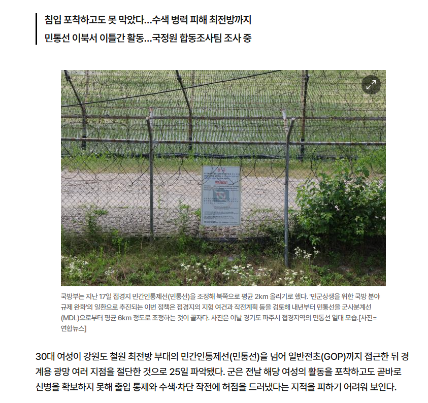

75 · 5 · 6 시간 전 · 원문

https://www.ajunews.com/view/20261025202736532
대한민국 군대 뭐하냐
수집 당시 댓글 5개
마리괭이 · 5 시간 전
그냥 침입도 아니고 광망절단?
앙대 · 5 시간 전
봉봉쇼콜라 · 4 시간 전
https://www.dogdrip.net/728023820서프라이즈 성공했네
티벳여우 · 4 시간 전
선은 왜자른거래
하위헌스 · 22 분 전


그냥 침입도 아니고 광망절단?